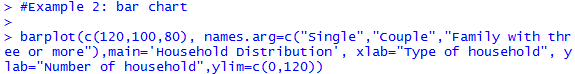
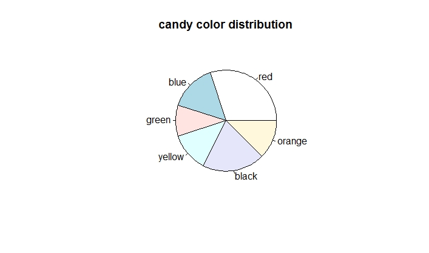
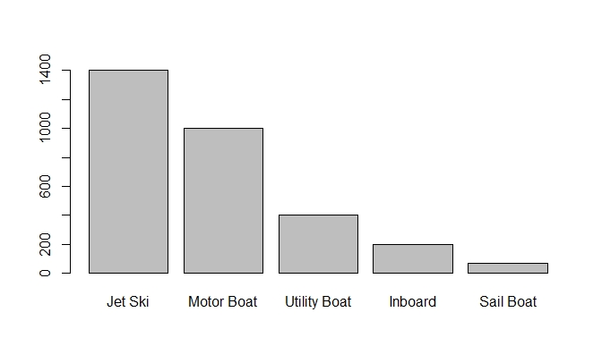

{width="4.74805227471566in" height="3.0in"}
{width="4.74805227471566in" height="3.0in"}Introduction
Data visualization helps us to interpret a dataset. It helps us to observe the patterns of data, identify outliers and influential points, and understand important features of the data. Exploratory data visualization helps to see the details of the data. For example, if we use the R function plot(ChickWeight$Time, ChickWeight$weight) to explore the Chick Weight data as following, then we can see the weight vary with time, and the weight deviates more through time (figure 1).
{width="4.74805227471566in" height="3.0in"}
Figure 1. Explore the Chick Weight data in R.
The way a variable is presented graphically should be adapted to the type of variable. For a qualitative variable, dot charts, bar charts, stacked bar charts, and pie charts are commonly used. In this module, we will introduce different R functions for plotting qualitative variables.
Learning Objectives
After this module, students will be able to
Generate dot plot
Generate pie chart
Generate bar chart
Generate histogram
Generate mosaic plot
Introduction
A dot chart shows the number of counts for each category using dots. Typically, the horizontal axis shows the categories, and the vertical axis shows the number of counts. A dot chart usually shows the total number of individuals in each group.
Knowledge
The R function of creating a dot chart is
dotchart(x, labels=NULL, groups=NULL, gdata=NULL, cex=par("cex"), pt.cex=cex, pch=21, gpch=21, bg=par("bg"), color=par("fg"), gcolor=par("fg"), lcolor="gray", xlim, main= NULL, xlab=NULL, ylab=NULL)
The arguments are:
x: a vector or matrix of values of the data
labels: a vector of labels for each point
groups: an optional factor indicating how the elements of x are grouped
gdata: data values for the groups
cex: the character size to be used
pt.cex: the cex to be applied to plooting symbols.
pch: the plotting character or symbol to be used
gpch: the plotting character or symbol to be used for group values
bg: the background color of plotting characters or symbols to be used
color: the color(s) to be used for points and labels
gcolor: the single color to be used for group labels and values
lcolor: the color to be used for the horizontal lines
xlim: horizontal range for the plot
main: title for the plot
xlab: axis label for the x-axis
ylab: axis label for the y-axis
Key Points to Remember
A dot chart shows the frequencies for each category of a categorical variable. The R function is dotchart().
When creating a dot plot, we need to make sure the horizontal axis starts from 0 using xlim=c(0, ). A common deceptive graph is a graph with the axis scale starting at some value greater than zero that exaggerates the differences between categories.
Practice and Reflection
Practice
Example 1: A survey records the number of households in each of the following category: single, couple, family of three or more. The data is shown in the table below:
Type of family Number of households
Single 120 Couple 100 Family of three or more 80
Generate a dot plot
The R code is
 {width="5.895833333333333in" height="0.625in"}
{width="5.895833333333333in" height="0.625in"}
The dot chart is shown in figure 2 below
 {width="5.4534722222222225in"
height="2.5833333333333335in"}
{width="5.4534722222222225in"
height="2.5833333333333335in"}
Figure 2. Dot chart of the household distribution.
The horizontal axis shows the frequencies for each type of family, and the vertical axis shows the three categories of the variable, type of family.
Reflection
Activity 1: The table below records the color of 20 M&M candies. Generate a table to show the number of candies for each color, and then generate a dot chart to represent the data by counts.
red red yellow yellow yellow red black blue blue red
orange black yellow blue black orange yellow black red orange
Assessments
Brown Black Black Blond Blond Brown Blond Blond Blond Red
yellow grey red blue green black grey red red black
black black green blue blue black yellow grey black grey
Introduction
Bar chart shows the number of counts in each category as bars. It is similar to a dot chart. Instead of using dots to represent the frequencies, a bar chart uses bars to represent the counts. The x-axis is the category, and the y-axis is the count.
Knowledge
The R function for bar chart is
barplot(x, width=1, space=NULL, names.arg=NULL, legend.text=NULL, beside=FALSE, horiz=FALSE, density=NULL, angle=45, col=NULL, border=par("fg"), main=NULL, xlab=NULL, ylab=NULL, xlim=NULL, ylim=NULL, inside=TRUE)
Arguments:
x: a vector or matrix of values showing the data
width: optional vector of bar width
space: the amount of space left before each bar. May be given as a single value or one value per bar
names.arg: a vector of names to be plotted below each bar or group of bars.
legend.text: a vector of text used to construct a legend for the plot, or a logical indicating whether a legend should be included
beside: a logical value. If FALSE, the columns of x are portrayed as stacked bars, and if TRUE the columns are portrayed as juxtaposed bars
horiz: a logical value. If FALSE, the bars are drawn vertically with the first bar to the left. If TRUE, the bars are drawn horizontally with the first at the bottom
density: a vector giving the density of shading lines, in lines per inch, for the bars or bar components. The default value of NULL means that no shading lines are drawn.
angle: the slope of shading lines, given as an angle in degrees for the bars or bar components
border: the color be used for the border of the bars. Use border=NA to omit borders
main: title of the plot
xlab: label of the x-axis
ylab: label of the y-axis
xlim: limits for the x-axis
ylim: limits for the y-axis
inside: a logical value. If TRUE, the lines which divide adjacent bars will be drawn
Key Points to Remember
A bar chart shows the frequencies of each category of a categorical variable, with the x-axis showing the categories and y-axis showing the frequencies. The R function is barplot().
When plotting a bar chart, we need to make sure the y-axis starts from zero to accurately show the difference between categories.
Practice and Reflection
Practice
Example 2: Use the data in example 1, create a bar chart. The R code is
{width="5.989583333333333in" height="0.7708333333333334in"}
The ylim=c(0,120) guarantees the graph starts from 0 for the y-axis. The bar chart is shown in figure 3 below.
{width="4.853857174103237in" height="2.3125in"}
Figure 3. Bar chart of the household distribution.
Reflections
Activity 2: Use the data in activity 1, create a bar chart to show the frequencies of each color of the M&M candy.
Assessments
We are interested in investigating the relationship between the percentage of children who have been immunized and the corresponding mortality rate for children under five in a country. The table listed the data of the percentage of immunized children and the mortality rate for a randomly chosen 9 countries.
Country Percentage immunized Mortality rate per 1000 births
Bolivia 77 118 Cambodia 32 184 China 94 43 Czech Republic 99 12 Egypt 89 55 Ethiopia 13 208 Mexico 91 33 Senegal 47 145 Turkey 76 87
Generate a bar plot to show the percentage immunized for each country; Title the graph as "immunization rate of nine countries"; Label the y-axis as "percent immunized".
Introduction
Stacked bar chart shows several measurements for one individual. A stacked bar has several layers, with each layer representing one variable. A stacked bar is used to represent more than one variables for each category.
Knowledge
The R function is the same as the barplot function, with the argument beside=FALSE. The R function is
barplot(x, width=1, space=NULL, names.arg=NULL, legend.text=NULL, beside=FALSE, horiz=FALSE, density=NULL, angle=45, col=NULL, border=par("fg"), main=NULL, xlab=NULL, ylab=NULL, xlim=NULL, ylim=NULL, inside=TRUE)
The arguments were introduced in the previous learning objective (learning objective two).
Key Points to Remember
A stacked bar plot shows measurements of multiple variables for each individual (or category). When plotting the stacked bar, we still need to use ylim=c(0, ) to make the y-axis start from 0. The R function is barplot() with the argument beside=FALSE.
Practice and Reflection
Practice
Example 3: The following data listed the height (in cm.), weight (in lb.), and circumference (in cm.) of three types of trees. Use stack bar to represent each type of tree.
Tree Height (cm) Weight (lb) Circumference (cm)
Maple 210 100 70 Pine 320 130 69 Oak 290 109 89 Poplar 410 180 90
The R code is
 {width="5.84375in" height="2.3333333333333335in"}
{width="5.84375in" height="2.3333333333333335in"}
The bar chart is shown in figure 4 below
 {width="5.453487532808399in" height="3.0in"}
{width="5.453487532808399in" height="3.0in"}
Figure 4. The stacked bar plot of trees' height, weight and circumference. The x-axis shows the four types of trees. The y-axis shows the measurements of height (black), weight (grey), and circumference (light grey).
Reflection Activity 3: The data below recorded five samples and the two values associated with each sample. Make a stacked bar plot to show the data.
Sample Value1 Value2
A 3 1 B 2 0 C 6 5 D 7 2 E 3 2
Assessment
We are interested in investigating the percentage of children who have been immunized and the corresponding mortality rate for children under five in a country. The table listed the data of the percentage of immunized children and the mortality rate for a randomly chosen 9 countries.
Country Percentage immunized Mortality rate per 1000 births
Bolivia 77 118 Cambodia 32 184 China 94 43 Czech Republic 99 12 Egypt 89 55 Ethiopia 13 208 Mexico 91 33 Senegal 47 145 Turkey 76 87
Generate a stacked bar plot to show the percentage immunized and mortality rate for each country; Title the graph as "immunization and mortality rate of nine countries".
Introduction
Pie chart is used to show the proportions (or counts) of categories. A pie chart is a very common graph that depicts quantitative data as slices of a circle, in which the size of each slice is proportional to the frequency count for the category. Although pie charts are common, they are not very effective.
Knowledge
The R function is
pie(x, labels=names(x), clockwise=FALSE, density=NULL, angle=45, main=NULL, col=variable)
The arguments are:
x: a vector of non-negative numerical quantities. The values in x are displayed as the areas of pie slices
labels: one or more expressions or character strings giving names for the slices.
clockwise: logical indicating if slices are drawn clockwise or counter clockwise; FALSE is the default setting
density: the density of shading lines, in lines per inch. The default value of NULL means that no shading lines are drawn.
angel: the slope of shading lines, given as an angle in degrees.
main: title of the graph
col: color; if col=names(x), then the color of the pie matches the legend
Key Points to Remember
A pie chart displays the frequency or relative frequency of each category of a qualitative variable. The R function is pie(). A pie chart is not very visually effective in showing the difference between categories, and is not recommended.
Practice and Reflection
Practice
Example 4: A bag of M&M candies has six color: red, blue, green, yellow, black, and orange. In a sample of 200 candies in a bag, there are 60 red, 30 blue, 20 green, 25 yellow, 40 black and 25 orange. Make a pie chart to show the number of each color. Make another pie chart to show the percentage of each color. The R code is
 {width="6.5in" height="2.6354166666666665in"}
{width="6.5in" height="2.6354166666666665in"}
The pie chart is shown in figure 6 below
{width="5.086037839020123in" height="3.0in"}
Figure 6.a. Pie chart to show the distribution of the six color
 {width="5.086037839020123in" height="3.0in"}
{width="5.086037839020123in" height="3.0in"}
Figure 6.b. Pie chart to show the distribution of the six color in percentage
Normally, a bar chart shows the data more effectively than a pie chart with a more accurate scale. For example, the data below shows the number of stolen boats in a recent year. Let us compare the bar chart and pie chart reprinting the same data (Triola, 2018)
Boat type Number stolen
Jet Ski 1400 Motor Boat 1000 Utility Boat 400 Inboard 200 Sail Boat 70
A bar chart is shown in figure 7.a, and a pie chart is shown in figure 7.b.
{width="3.1201706036745405in"
height="2.6in"} {width="3.252804024496938in"
height="2.7in"}
{width="3.252804024496938in"
height="2.7in"}
Figure 7.a. Bar chart of boat stolen data Figure 7.b. Pie chart of boat stolen data
From figure 7, a bar chart does a better job of showing the relative sizes of different types of boat stolen and the trend. A bar chart effectively shows the difference among categories with only one color, while the differences among the utility boat, in board, and sail boat are not very easy to tell from a pie chart.
Reflection
Activity 4: A survey was conducted to study the political affiliation distribution. Among the 300 people surveyed, 101 of them are Republicans, 129 are Democrats, and 70 are others. Generate a pie chart to show the political affiliation distribution.
Assessment
Using the following data set of paint color shown in a painting competition to generate a pie chart showing the frequencies of each color. Title the graph. Match the legend with the color.
blue black red red grey red blue green black black red red black
Introduction
A mosaic plot shows the relationship between two qualitative variables. The mosaic plot is based on conditional probability.
Knowledge
To illustrate how a mosaic plot is generated, we use an example from a data set called Berkeley 1973 Admissions data (NCSS.com). This data is of interest, because it was used to show that males were admitted at a higher rate than females. From figure 8 below (from ncss.com), the widths of the boxes are proportional to the percentage of females and males. There are 41% of females and 59% of males among the applicants. The heights of the boxes are proportional to the percentage admitted. There are 45% of the male applicants admitted, and 30% of the female applicants admitted (Figure 8). The boxes for admitted females and males are colored blue and the boxes for not admitted females and males are colored pink. By construction, the percent for each gender is the width of the box, and the area of each box is proportional to the corresponding cell frequency.
{width="4.687045056867891in" height="3.4in"}
Figure 8. Mosaic plot of the relationship between gender and admission.
To generate a mosaic plot, we need to firstly install the R package vcd. The mosaic plot function is
mosaic(x, condvar = )
x: the table or formula
condvar: vector of integers or character strings indicating conditioning variables, if any. The table will be permuted to order them first.
Key Points to Remember
A mosaic plot shows the relationship between two categorical variables using colored boxes. The height and width of the boxes proportionally represent each variable value for each category.
The R function is mosaic() with the installation of the package vcd first.
Practice and Reflection
Practice
In example 5, we will plot the relationship between eye color and hair color from the R dataset HairEyeColor. The R code is
{width="3.7291666666666665in" height="0.5in"}
The mosaic plot is shown in figure 9
 {width="5.114751749781277in" height="3.0in"}
{width="5.114751749781277in" height="3.0in"}
Figure 9. The mosaic plot of the relationship between eye color and hair color for males and females.
From figure 9, we observe that most of the males are in brown hair and brown eyes in the sample (the largest rectangle for male), and most of the females have brown hair and brown eyes (the largest rectangle for female).
Reflection
Activity 5: the data below shows a random sample of 400 University of Iowa undergraduate students. The students were classified according to gender and the college in which they are enrolled (Hogg & Tanis, 2006).
Business Engineering Liberal Arts Nursing Pharmacy
Male 21 16 145 2 6 Female 14 4 175 13 4
Assessment
In 1912 the luxury liner Titanic, on its first voyage across the Atlantic, struck an iceberg and sank. Some passengers got off the ship in lifeboats, but many died. The two-way table gives information about adult passengers who lived and who died, by class of travel.
Survival Status
Class of Travel Survived Died First class 197 122 Second class 94 167 Third class 151 476
Generate a mosaic plot to show the relationship between survival status and the class of travel.